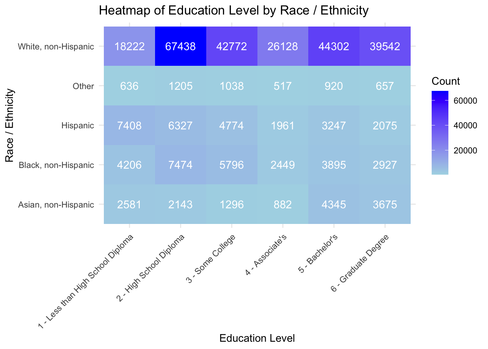
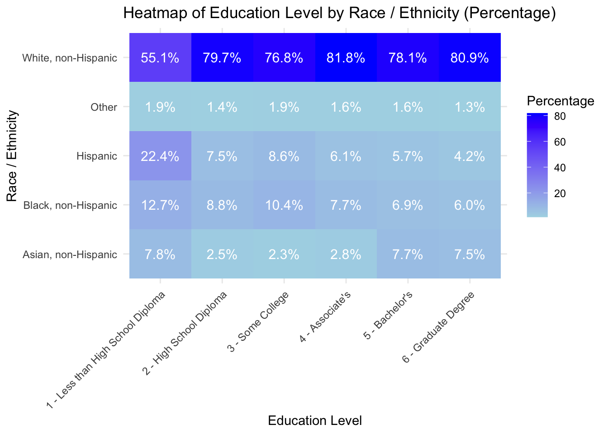

Here we provide a detailed analysis using more sophisticated statistics techniques.
This comes from the file analysis.qmd.
We describe here our detailed data analysis. This page will provide an overview of what questions you addressed, illustrations of relevant aspects of the data with tables and figures, and a statistical model that attempts to answer part of the question. You’ll also reflect on next steps and further analysis.
The audience for this page is someone like your class mates, so you can expect that they have some level of statistical and quantitative sophistication and understand ideas like linear and logistic regression, coefficients, confidence intervals, overfitting, etc.
While the exact number of figures and tables will vary and depend on your analysis, you should target around 5 to 6. An overly long analysis could lead to losing points. If you want you can link back to your blog posts or create separate pages with more details.
The style of this paper should aim to be that of an academic paper. I don’t expect this to be of publication quality but you should keep that aim in mind. Avoid using “we” too frequently, for example “We also found that …”. Describe your methodology and your findings but don’t describe your whole process.
Note on Attribution
In general, you should try to provide links to relevant resources, especially those that helped you. You don’t have to link to every StackOverflow post you used but if there are explainers on aspects of the data or specific models that you found helpful, try to link to those. Also, try to link to other sources that might support (or refute) your analysis. These can just be regular hyperlinks. You don’t need a formal citation.
If you are directly quoting from a source, please make that clear. You can show quotes using > like this
> To be or not to be.
To be or not to be.
Rubric: On this page
You will
Introduce what motivates your Data Analysis (DA)
Which variables and relationships are you most interested in?
What questions are you interested in answering?
Provide context for the rest of the page. This will include figures/tables that illustrate aspects of the data of your question.
Modeling and Inference
The page will include some kind of formal statistical model. This could be a linear regression, logistic regression, or another modeling framework.
Explain the ideas and techniques you used to choose the predictors for your model. (Think about including interaction terms and other transformations of your variables.)
Describe the results of your modelling and make sure to give a sense of the uncertainty in your estimates and conclusions.
Explain the flaws and limitations of your analysis
Are there some assumptions that you needed to make that might not hold? Is there other data that would help to answer your questions?
Clarity Figures
Are your figures/tables/results easy to read, informative, without problems like overplotting, hard-to-read labels, etc?
Each figure should provide a key insight. Too many figures or other data summaries can detract from this. (While not a hard limit, around 5 total figures is probably a good target.)
Default lm output and plots are typically not acceptable.
Clarity of Explanations
How well do you explain each figure/result?
Do you provide interpretations that suggest further analysis or explanations for observed phenomenon?
Organization and cleanliness.
Make sure to remove excessive warnings, hide most or all code, organize with sections or multiple pages, use bullets, etc.
This page should be self-contained, i.e. provide a description of the relevant data.
Loading Clean Data
library(here)
here() starts at /Users/vynguyen/Desktop/MA415/final-project-team7
# Set the path to the RDS filecleaned_dataset_path_rds <-here("dataset", "cleaned_NYSERDA_LMI_Census_2013-2015.rds")# Load the dataset from the RDS fileclean_data <-readRDS(cleaned_dataset_path_rds)head(clean_data)
County...County.Group Households.with.Elderly Households.with.Children
1 Queens Yes No
2 Queens No Yes
3 Erie Yes No
4 Queens No No
5 Erie Yes No
6 New York No Yes
Economic.Development.Region Income.Groups
1 New York City $10,000-<$20,000
2 New York City $0 to <$10,000
3 Western New York $0 to <$10,000
4 New York City $10,000-<$20,000
5 Western New York $10,000-<$20,000
6 New York City $10,000-<$20,000
Percent.of.Poverty.Level Low.to.Moderate.Income..LMI..Group
1 1 - Income at or below 100% HHSPG Group 1 - Very Low Income
2 1 - Income at or below 100% HHSPG Group 1 - Very Low Income
3 1 - Income at or below 100% HHSPG Group 1 - Very Low Income
4 2 - Income 101%-150% HHSPG Group 1 - Very Low Income
5 2 - Income 101%-150% HHSPG Group 1 - Very Low Income
6 1 - Income at or below 100% HHSPG Group 1 - Very Low Income
Household.Type Non.elderly.Disabled.Indicator
1 Elderly(60+) Individual 0
2 Younger(Up to 40) with children 0
3 Elderly(60+) Individual 0
4 Older(40-59) with no children 0
5 Elderly(60+) Head 0
6 Older(40-59) with children 0
Race...Ethnicity Linguistic.Isolation
1 Asian, non-Hispanic Linguistically Isolated Other
2 Asian, non-Hispanic Not Linguistically Isolated
3 Black, non-Hispanic Not Linguistically Isolated
4 Hispanic Not Linguistically Isolated
5 White, non-Hispanic Not Linguistically Isolated
6 Hispanic Not Linguistically Isolated
Housing.Unit.Type Owner.Renter.Status
1 4 - Moderate Multi-Family (5-50 units) Own
2 1 - Single Family Attached Rent/Other
3 5 - Large Multi-Family (50+ units) Rent/Other
4 3 - Small Multi-Family (2-4 units) Rent/Other
5 2 - Single Family Detached Own
6 4 - Moderate Multi-Family (5-50 units) Rent/Other
Main.Heating.Fuel.Type Home.Energy.Payment.Method
1 3 - Fuel Oil Only pays non-heat electric direct-to-vendor
2 1 - Electric Pays heating bill direct-to-vendor
3 1 - Electric Heat included in rent or fee
4 1 - Electric Pays heating bill direct-to-vendor
5 2 - Utility Gas Pays heating bill direct-to-vendor
6 3 - Fuel Oil Pays heating bill direct-to-vendor
Housing.Vintage LMI.Study.Region
1 1939 or Earlier NYC I
2 1939 or Earlier NYC I
3 1939 or Earlier Western
4 1970-<2000 NYC I
5 1940-< 1970 Western
6 1939 or Earlier NYC III
LMI.Population.Segment
1 #8 – Low/Moderate-Income Owners in Multifamily (5+ Unit) Buildings
2 #5 – Low-Income Renters in Single-Family & Small Multifamily (2-4 Units) Homes
3 #1 – Low-Income Renters in Multifamily (5+ Unit) Buildings
4 #5 – Low-Income Renters in Single-Family & Small Multifamily (2-4 Units) Homes
5 #3 – Low-Income Owners in Single-Family & Small Multifamily (2-4 Unit) Homes
6 #1 – Low-Income Renters in Multifamily (5+ Unit) Buildings
Mortgage.Indicator Time.in.Home Education.Level
1 No 4 - 10 to 19 years 5 - Bachelor's
2 Unknown 4 - 10 to 19 years 3 - Some College
3 Unknown 3 - Five to nine years 6 - Graduate Degree
4 Unknown 2 - Two to four years 3 - Some College
5 No 6 - 30 or more years 1 - Less than High School Diploma
6 Unknown 5 - 20 to 29 years 4 - Associate's
Head.of.Household.Age Household.Weight
1 60-69 145.00
2 30-39 28.33
3 70+ 21.67
4 50-59 23.00
5 70+ 25.67
6 50-59 31.33
Analysis
For Blog Post 4:
library(ggplot2)library(reshape2)# Creating a cross-tabulation of Race / Ethnicity and Education Levelct <-table(clean_data$"Race...Ethnicity", clean_data$"Education.Level")# Melting the table for ggplotct_melted <-melt(ct)# Plotting with counts in each boxggplot(ct_melted, aes(x = Var2, y = Var1, fill = value)) +geom_tile() +geom_text(aes(label = value), color ="white", size =4) +# Showing the countscale_fill_gradient(low ="lightblue", high ="blue") +labs(x ="Education Level", y ="Race / Ethnicity", fill ="Count", title ="Heatmap of Education Level by Race / Ethnicity") +theme_minimal() +theme(axis.text.x =element_text(angle =45, hjust =1))

# Same as before but with percentages of each education levelct_percent <-prop.table(ct, 2) *100ct_percent_melted <-melt(ct_percent)# Plotting with percentage in each boxggplot(ct_percent_melted, aes(x = Var2, y = Var1, fill = value)) +geom_tile() +geom_text(aes(label =sprintf("%.1f%%", value)), color ="white", size =4) +# showing percentagescale_fill_gradient(low ="lightblue", high ="blue") +labs(x ="Education Level", y ="Race / Ethnicity", fill ="Percentage", title ="Heatmap of Education Level by Race / Ethnicity (Percentage)") +theme_minimal() +theme(axis.text.x =element_text(angle =45, hjust =1))

library(dplyr)
Attaching package: 'dplyr'
The following objects are masked from 'package:stats':
filter, lag
The following objects are masked from 'package:base':
intersect, setdiff, setequal, union
library(forcats)# Adding a numeric representation for income groupsclean_data$Income.Numeric <-case_when( clean_data$Income.Groups =="$0 to <$10,000"~5, clean_data$Income.Groups =="$10,000-<$20,000"~15, clean_data$Income.Groups =="$20,000-<$30,000"~25, clean_data$Income.Groups =="$30,000-<$40,000"~35, clean_data$Income.Groups =="$40,000-<$50,000"~45, clean_data$Income.Groups =="$50,000+"~55,TRUE~NA_real_)# Creating the plotggplot(clean_data, aes(x =fct_reorder(Education.Level, Income.Numeric, .fun = mean), y = Income.Numeric, fill = Race...Ethnicity)) +geom_bar(stat ="summary", fun ="mean", position =position_dodge()) +theme_minimal() +labs(x ="Education Level",y ="Average Income",fill ="Race / Ethnicity",title ="Average Income by Education Level and Race / Ethnicity" ) +theme(axis.text.x =element_text(angle =55, hjust =1),legend.position ="top",panel.grid.major.y =element_line(color ="black", size =0.5),panel.grid.minor.y =element_line(color ="black", size =0.5) ) +scale_fill_brewer(palette ="Set3")
Warning: The `size` argument of `element_line()` is deprecated as of ggplot2 3.4.0.
ℹ Please use the `linewidth` argument instead.
── Conflicts ────────────────────────────────────────── tidyverse_conflicts() ──
✖ dplyr::filter() masks stats::filter()
✖ dplyr::lag() masks stats::lag()
✖ purrr::lift() masks caret::lift()
ℹ Use the conflicted package (<http://conflicted.r-lib.org/>) to force all conflicts to become errors
library(modelr) # For weighted regression
# Load the datasetclean_data <-readRDS(here("dataset", "cleaned_NYSERDA_LMI_Census_2013-2015.rds"))